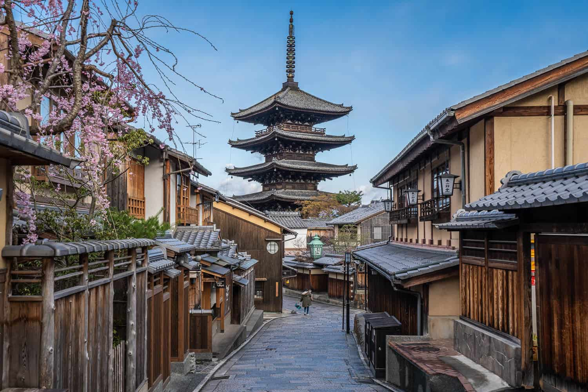
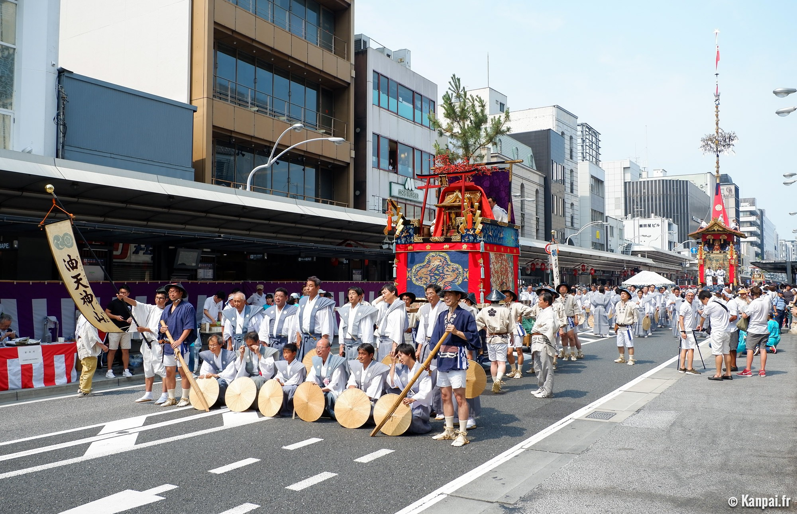

Introduction: |
Kyoto is the capital city of Kyoto Prefecture in the Kansai region of Japan's largest and most populous island of Honshu. As of 2020, the city had a population of 1.46 million, making it the ninth-most populous city in Japan.Kyoto, a city steeped in history and culture, offers a captivating blend of ancient traditions and modern amenities. Once the imperial capital of Japan, Kyoto remains a cultural and spiritual center, renowned for its numerous Buddhist temples, Shinto shrines, imperial palaces, and traditional wooden houses. The iconic Fushimi Inari-taisha Shrine, with its thousands of vermilion torii gates, is a testament to the city's enduring spirituality. The tranquil Arashiyama Bamboo Forest, a picturesque oasis of towering bamboo stalks, provides a serene escape from the urban bustle.Kyoto's cultural heritage extends beyond its architectural marvels. The city is celebrated for its traditional arts, such as tea ceremony (Chado), ikebana (flower arrangement), and calligraphy (Shodo). These refined practices offer visitors a glimpse into the Japanese aesthetic and philosophy. Kyoto's vibrant festivals, including the Gion Festival and the Aoi Festival, showcase the city's rich cultural traditions and community spirit.Beyond its historical and cultural attractions, Kyoto offers a diverse range of experiences. The city's bustling markets, such as Nishiki Market, provide a feast for the senses with their array of fresh produce, local delicacies, and handcrafted goods. Kyoto's cuisine, known for its exquisite presentation and emphasis on seasonal ingredients, delights discerning palates. Whether indulging in a traditional kaiseki meal or savoring a bowl of ramen, visitors can savor the culinary delights of this historic city.In addition to its cultural and culinary offerings, Kyoto also boasts natural beauty. The city is surrounded by lush mountains, providing opportunities for hiking, cycling, and enjoying the tranquility of nature. The nearby Arashiyama district offers stunning views of the Katsura River and the surrounding mountains, making it a popular destination for picnics and leisurely walks.Kyoto's blend of history, culture, natural beauty, and modern amenities makes it a captivating destination for travelers of all ages. Whether seeking spiritual enlightenment, cultural immersion, or simply a relaxing getaway, Kyoto offers something to inspire and delight every visitor. |
History:
|
Old period:Ample archeological evidence suggests human settlement in the area of Kyoto began as early as the Paleolithic period, although not much published material is retained about human activity in the region before the 6th century, around which time the Shimogamo Shrine is believed to have been established.During the 8th century, when powerful Buddhist clergy became involved in the affairs of the imperial government, Emperor Kanmu chose to relocate the capital in order to distance it from the clerical establishment in Nara. His last choice for the site was the village of Uda, in the Kadono district of Yamashiro Province. The new city, Heian-kyō ("tranquility and peace capital"), modeled after Chinese Tang dynasty capital Chang'an,became the seat of Japan's imperial court in 794, beginning the Heian period of Japanese history. Although military rulers established their governments either in Kyoto (Muromachi shogunate) or in other cities such as Kamakura (Kamakura shogunate) and Edo (Tokugawa shogunate), Kyoto remained Japan's capital until the transfer of the imperial court to Tokyo in 1869 at the time of the Imperial Restoration.
Middle period:In the Sengoku period, the city suffered extensive destruction in the Ōnin War of 1467–1477, and did not really recover until the mid-16th century. During the war, battles between samurai factions spilled into the streets, and came to involve court nobility (kuge) and religious factions as well. Nobles' mansions were transformed into fortresses, deep trenches dug throughout the city for defense and as firebreaks, and numerous buildings burned. The city has not seen such widespread destruction since.In the late 16th century, Toyotomi Hideyoshi reconstructed the city by building new streets to double the number of north–south streets in central Kyoto, creating rectangle blocks superseding ancient square blocks. Toyotomi also built earthwork walls called odoi encircling the city. Teramachi Street in central Kyoto is a Buddhist temple quarter where Toyotomi gathered temples in the city.
Modren period:Throughout the Edo period, the economy of the city flourished as one of three major cities in Japan, the others being Osaka and Edo. At the end of the period, the Hamaguri rebellion of 1864 burned down 28,000 houses in the city, which showed the rebels' dissatisfaction towards the Tokugawa Shogunate.At the start of the Meiji period, the emperor's move from Kyoto to Tokyo in 1869 weakened the economy of Kyoto. The modern city of Kyoto was formed on April 1, 1889. The construction of Lake Biwa Canal in 1890 was one measure taken to revive the city. The population of the city exceeded one million in 1932.Kyoto is one of the few Japanese cities that still have an abundance of prewar buildings, such as the traditional townhouses known as machiya.Kyoto became a city designated by government ordinance on September 1, 1956. In 1994, 17 historic monuments in Kyoto were inscribed on the list as UNESCO World Heritage Sites. In 1997, Kyoto hosted the conference that resulted in the protocol on greenhouse gas emissions (United Nations Framework Convention on Climate Change). |
Vist:
Best time to visit:
- Kyoto can be quite cold in winter, with temperatures averaging around 41 degrees F (5 degrees C) from December to February, and occasional snow.
- Spring brings an uptick in temperature, though it can still be brisk. With the advent of the cherry blossoms in late March and early April, this is Kyoto’s most popular season (along with fall leaf-peeping time).
- With June comes tsuyu, or rainy season, and this often lasts until mid-July. Expect torrential rain and even sometimes flooding. Come prepared with a rain jacket, boots, and an umbrella and be equipped with a Plan B involving a nice museum or other indoor activity in case Plan A is rained out.
- July and August are characterized by extreme heat. Average temperatures hover around 80 degrees F (27 degrees C), and while that may not sound hot, the high humidity reduces many to a sweaty puddle.
- September and October are the height of typhoon season, and the region experiences at least a few per year. Expect strong winds and wet weather, including transportation delays and shop closures for the stronger storms.
- Once the stormy weather passes, autumn settles in. October and November are temperate, with lots of bright, sunny days and temperatures averaging around 60 degrees F (15 degrees C).
- November, the trees start changing color, bringing brilliant yellows, reds, and oranges on the gingko, maple, and oak trees. This is light jacket weather, and it’s excellent for strolling and other outdoor activities.
Not to visit on:
Kyoto is undeniably magnificent, but the secret is out, and it does get congested. Major tourist attractions get crowds that can resemble a rock concert, and it can put a pall on the quiet beauty of the place.If you’re headed there during the high season, try to schedule your visits to the big sights (like Kiyomizudera, the Arashiyama Bamboo Forest, and Fushimi Inari Shrine) on a weekday, and better yet, in the early morning. By mid-morning, the tour buses will start pulling up and it can be hard to navigate.And it always pays to get a little lost, to allow time for wandering and discovery. Visiting quieter sites might not bring as many bragging rights, but the payoff–in time to enjoy at your leisure–will be huge. |
Tourist Spots:
•Fushimi inari taisha shrine:
.jpg) |
Fushimi Inari-taisha is the head shrine of the kami Inari, located in Fushimi-ku, Kyoto, Kyoto Prefecture, Japan. The shrine sits at the base of a mountain, also named Inari, which is 233 metres (764 ft) above sea level, and includes trails up the mountain to many smaller shrines which span 4 kilometres (2.5 mi) and take approximately 2 hours to walk up.It is unclear whether the mountain's name, Inariyama, or the shrine's name came first.Inari was originally and remains primarily the kami of rice and agriculture, but merchants also worship Inari as the patron of business.Each of Fushimi Inari-taisha's roughly 10,000 torii were donated by a Japanese business, and approximately 800 of these are set in a row to form the Senbon Torii, creating the impression of a tunnel.The shrine is said to have ten thousand such gates in total that designate the entrance to the holy domain of kami and protect it against wicked forces.Owing to the popularity of Inari's division and re-enshrinement, this shrine is said to have as many as 32,000 sub-shrines (bunsha) throughout Japan. |
•Kinkaku-ji Temple
.jpg) |
Kinkaku-ji ('Temple of the Golden Pavilion'), officially named Rokuon-ji ('Deer Garden Temple'), is a Zen Buddhist temple in Kyoto, Japan.It is one of the most popular buildings in Kyoto, attracting many visitors annually.It is designated as a National Special Historic Site, a National Special Landscape and is one of 17 locations making up the Historic Monuments of Ancient Kyoto which are World Heritage Sites.The site of Kinkaku-ji was originally a villa called Kitayama-dai, belonging to a powerful statesman, Saionji Kintsune.Kinkaku-ji's history dates to 1397, when the villa was purchased from the Saionji family by shōgun Ashikaga Yoshimitsu and transformed into the Kinkaku-ji complex.When Yoshimitsu died the building was converted into a Zen temple by his son, according to his wishes.The pavilion is three stories high, 12.5 meters (40 feet) in height.The reconstruction is said to be a close copy of the original, although some have questioned whether such an extensive gold-leaf coating was used on the original structure.In 1984, it was discovered that the gold leaf on the reconstructed building had peeled off, and from 1986 to 1987, it was replaced with 0.5 μm gold leaf, five times the thickness of the gold leaf on the reconstructed building. |
•Nijo Castle
.jpg) |
Nijo Castle is a flatland castle in Kyoto, Japan. The castle consists of two concentric rings (Kuruwa) of fortifications, the Ninomaru Palace, the ruins of the Honmaru Palace, various support buildings and several gardens. The surface area of the castle is 275,000 square metres (27.5 ha; 68 acres), of which 8,000 square metres (86,000 sq ft) is occupied by buildings.It is one of the seventeen Historic Monuments of Ancient Kyoto which have been designated by UNESCO as a World Heritage Site.In 1601, Tokugawa Ieyasu, the founder of the Tokugawa shogunate, ordered all the feudal lords in western Japan to contribute to the construction of Nijō Castle, which was completed during the reign of Tokugawa Iemitsu in 1626. While the castle was being built, a portion of land from the partially abandoned Shinsenen Garden (originally part of the imperial palace and located south) was absorbed, and its abundant water was used in the castle gardens and ponds. Parts of Fushimi Castle, such as the main tower and the karamon, were moved here 1625–26. Nijo Castle was built as the Kyoto residence of the Tokugawa shōguns. The Tokugawa shogunate used Edo as the capital city. |
•Arashiyama bamboo forest
.jpg) |
Located at the foot of the “Storm Mountains” in the north of the city of Kyoto, this world-famous, seemingly endless forest of swaying bamboo boughs is perfect for a relaxing retreat to nature during a stay in Japan.The Arashiyama bamboo grove is open 24/7 and admission is free. The surrounding Arashiyama district, known for unique fishing methods which involve using trained cormorant birds, is also well worth a visit.Its main street and Togetsu-kyo Bridge have been called a “tourist circus,” but beyond this thoroughfare, Arashiyama offers an authentic and unforgettable Japanese experience. Read on to discover how the bamboo forest is just the beginning.This sightseeing district makes for an incredible day trip from Kyoto. From lush forests to cherry blossoms to vibrant autumn koyo colors, Arashiyama is a visual delight.Arashiyama’s Sagano Bamboo Forest, or Bamboo Grove, is both locally famous and world-renowned. Visitors can stroll paths lined with endless rows of towering bamboo. The experience has been described as other-worldly, serene, and dreamlike.The sound of the rustling bamboo within this forest has been named one of the “100 Soundscapes of Japan” by the Japanese Ministry of Environment. Together with Fushimi Inari and the Kinkaku-ji, it offers a Kyoto experience not to be missed.The bamboo grove is open 24 hours a day and boasts no admission fee, so it is recommended that during peark season, you visit it early in the morning or at sunset. |
•Kiyomizu dera temple
.jpg) |
Kiyomizu-dera ('Pure Water Monastery') is a Buddhist temple located in eastern Kyoto, Japan. The temple is part of the Historic Monuments of Ancient Kyoto UNESCO World Heritage Site.The temple was established in 778, during the late Nara period, by Enchin Shonin, who was a priest from Nara (the capital of Japan from 710 to 784). He is said to have received a vision telling him to construct the temple next to the Otowa spring.The expression "to jump off the stage at Kiyomizu" is the Japanese equivalent of the English expression "to take the plunge".This refers to an Edo-period tradition that held that if one survived a 13-meter (43-foot) jump from the stage, one's wish would be granted. During the Edo period, 234 jumps were recorded, and of the jumpers, 85.4 per cent survived.The practice was prohibited in 1872.The temple complex includes several other shrines, among them the Jishu Shrine, dedicated to Ōkuninushi, a god of love and "good matches".Jishu Shrine possesses a pair of "love stones" placed 10 meters (30 feet) apart,which lonely visitors can try to walk between with their eyes closed. Success in reaching the other stone with their eyes closed implies that the pilgrim will find true love |
Tradition: |
•Thekimono ('thing to wear')is a traditional Japanese garment and the national dress of Japan. The kimono is a wrapped-front garment with square sleeves and a rectangular body, and is worn left side wrapped over right, unless the wearer is deceased.The kimono is traditionally worn with a broad sash, called an obi, and is commonly worn with accessories such as zōri sandals and tabi socks.Kimono have a set method of construction and are typically made from a long, narrow bolt of cloth known as a tanmono, though Western-style fabric bolts are also sometimes used. There are different types of kimono for men, women, and children, varying based on the occasion, the season, the wearer's age, and – less commonly in the modern day – the wearer's marital status. Despite the kimono's reputation as a formal and difficult-to-wear garment, there are types of kimono suitable for both formal and informal occasions. The way a person wears their kimono is known as kitsuke ('dressing').The history of the kimono can be tracked back to the Heian period (794–1185), when Japan's nobility embraced a distinctive style of clothing. Formerly the most common Japanese garment, the kimono has fallen out of favor and is rarely worn as everyday dress now. They are most often seen at summer festivals, where people frequently wear the yukata, the most informal type of kimono. More formal types are worn to funerals, weddings, graduations, and other formal events. Geisha and maiko are required to wear a kimono as part of their profession, and rikishi (sumo wrestlers) must wear kimonos at all times in public. Despite the small number of people who wear it regularly and its reputation as a complicated garment, the kimono has experienced a number of revivals in previous decades, and is still worn today as fashionable clothing in Japan. |
| •Tea cermony(Chado)Chado, or the Way of Tea, is a traditional Japanese ritual that involves preparing and serving matcha green tea in a serene and contemplative setting. This practice, often associated with Zen Buddhism, emphasizes mindfulness, hospitality, and the appreciation of beauty.A typical tea ceremony involves a host and guests, who gather in a tatami room adorned with simple yet elegant decorations. The host, dressed in traditional attire, performs a series of intricate movements as they prepare the tea, from grinding the matcha to whisking it into a frothy mixture. The tea is served in small, ceramic bowls, and guests are expected to follow a specific sequence of gestures and etiquette.The tea ceremony is more than just a ritual; it is a cultural experience that offers a glimpse into the Japanese aesthetic and philosophy. The emphasis on simplicity, harmony, and mindfulness is reflected in every aspect of the ceremony, from the preparation of the tea to the design of the tea room. The slow, deliberate movements of the host and the contemplative silence that fills the room create a sense of peace and tranquility.Beyond its cultural significance, the tea ceremony also offers a unique opportunity for social interaction. The ritual provides a shared experience that fosters a sense of connection and harmony among participants. As guests partake in the tea ceremony, they are invited to appreciate the beauty of the moment, the simplicity of the surroundings, and the depth of human connection.In Kyoto, the birthplace of the tea ceremony, this tradition is deeply ingrained in the city's culture. The city is home to numerous tea rooms, where visitors can experience the tea ceremony firsthand and learn about its history and philosophy. Whether you are a seasoned tea enthusiast or simply curious about Japanese culture, the tea ceremony offers a unique and rewarding experience. |
| •IkebanaIt is the oldest and largest school of ikebana, the Japanese art of floral design.It was founded in the 15th century by the Buddhist monk Senno. The school is based at the Rokkaku-dō temple in Kyoto.The name is derived from a pond (ike)where Prince Shōtoku was bathing.The custom of placing flowers on the altar began when Buddhism was introduced to Japan by way of emissaries to China in about 538. In Japan people tried to give deeper meaning to the thoughts accompanying flower arranging.In other words, they wished to arrange flowers (tateru, to arrange stems in an upright or standing manner), rather than casually placing them in a vase. An earlier attitude of passive appreciation developed into a more deeply considered approach. Early forms of Ikebana referred to as tatehana were arranged.The Rokkaku-dō in Kyoto is the site of the birth and earliest development of ikebana. The name Rokkaku refers to the hexagonal shape of the temple. Rokkaku-dō temple was founded by Prince Shōtoku in the 6th century to enshrine a Nyoirin Kannon Bosatsu, the Goddess of Mercy.Near a pond (ike) where Prince Shōtoku bathed, a small hut (bō; priest's lodge, monk's living house attached to a Buddhist temple[2]) was built and became the home of succeeding generations of Buddhist priests. This gave rise to the name ikenobō.[1] In the temple grounds, one stone is called Heso-ishi. It means "bellybutton stone". It is said that it was the foundation stone of the original temple. Because this temple existed before the transfer of the national capital to Kyoto in 794, it has been claimed to be the center of the city.In the Heian period (794-1192), apart from altar offerings, the practice of enjoying flowers displayed beautifully in a vase became popular. Poems, novels and essays from that time contain many passages that describe the appreciation of flowers used in this way. In the early 7th century Ono no Imoko, a former Japanese envoy to China, became a Buddhist priest and started setting up flowers. |
| •Noh and Kabuki TheaterNoh and Kabuki theater are two iconic classical forms of Japanese theater that have deep roots in Kyoto. Noh, the older of the two, emerged in the 14th century and is known for its stylized movements, masked performers, and poetic language. It often explores themes of love, loss, and the supernatural, drawing inspiration from ancient legends and folklore.Kabuki, on the other hand, developed in the 17th century and is characterized by its elaborate costumes, dramatic makeup, and exaggerated gestures. Kabuki plays are typically based on historical events, folk tales, or domestic dramas. While Noh is more reserved and contemplative, Kabuki is known for its vibrant energy and dramatic performances.Kyoto has played a significant role in the development and preservation of these theatrical traditions. The city's numerous temples and shrines provided venues for performances, and Kyoto's wealthy patrons supported the creation of new plays and the training of talented actors. Today, Kyoto remains a center for Noh and Kabuki theater, with dedicated theaters and schools that continue to carry on these ancient traditions.Noh is the older of the two, dating back to the 14th century. It is characterized by its stylized movements, masked performers, and poetic language. Noh plays often explore themes of love, loss, and the supernatural, drawing inspiration from ancient legends and folklore. The use of masks is a distinctive feature of Noh theater, with each mask representing a specific character or emotion.Kabuki emerged in the 17th century and is known for its elaborate costumes, dramatic makeup, and exaggerated gestures. Kabuki plays are typically based on historical events, folk tales, or domestic dramas. While Noh is more reserved and contemplative, Kabuki is renowned for its vibrant energy and dramatic performances. The use of makeup, known as "okeya," is a hallmark of Kabuki theater, with different types of makeup used to portray various characters and emotions. |
.jpg) | •MaikoMaiko are young women who are apprentices to geisha, traditional female entertainers in Japan. They undergo rigorous training to learn the skills and etiquette required to become geisha. This training typically involves mastering Japanese dance, music, and conversation.Maiko are easily recognizable by their distinctive appearance. They wear elaborate kimonos, often with intricate patterns and vibrant colors. Their hair is styled in a complex updo, adorned with flowers and hair ornaments. Maiko also wear white powdered makeup and red lipstick, creating a striking and ethereal look.Beyond their appearance, maiko are skilled performers. They learn various traditional Japanese dances, including kabuki and kyōgen, as well as musical instruments such as the shamisen and the koto. They also receive training in etiquette, conversation, and tea ceremony.Maiko typically begin their training at a young age and spend several years apprenticing to a geisha. During this time, they live together in a traditional Japanese house called an "okiya" and learn from their mentor. Once they have completed their training, maiko become full-fledged geisha and can begin to entertain guests at teahouses and other venues.The maiko culture is a unique aspect of Japanese tradition, offering a glimpse into the country's rich history and cultural heritage. While the number of geisha has declined in recent years, maiko continue to play an important role in preserving this ancient art form.In the morning, maiko take lessons in the traditional arts. At night, they dance, sing, play the shamisen, and serve visitors at exclusive ochaya (teahouses).Maiko originated from women who served green tea and dango (Japanese dumpling made from rice flour) to visitors to the Kitano Tenman-gū or Yasaka Shrine in teahouses in Kyoto about 300 years ago. |
Festival: |
•Gion festivalThe Gion Festival (Gion Matsuri) is one of the largest and most famous festivals in Japan, taking place annually during the month of July in Kyoto. Many events take place in central Kyoto and at the Yasaka Shrine, the festival's patron shrine, located in Kyoto's famous Gion district, which gives the festival its name. It is formally a Shinto festival, and its original purposes were purification and pacification of disease-causing entities. There are many ceremonies held during the festival, but it is best known for its two Yamaboko Junko processions of floats, which take place on July 17 and 24.The three nights leading up to each day of a procession are sequentially called yoiyoiyoiyama, yoiyoiyama , and yoiyama . During these yoiyama evenings, Kyoto's downtown area is reserved for pedestrian traffic, and some traditional private houses near the floats open their entryways to the public, exhibiting family heirlooms in a custom known as the Folding Screen Festival (Byōbu Matsuri). Additionally, the streets are lined with night stalls selling food such as yakitori (barbecued chicken on skewers), taiyaki, takoyaki (fried octopus balls), okonomiyaki, traditional Japanese sweets, and many other culinary delights.The floats in the yoiyama parade are divided into two groups, the larger hoko ("halberd") and the smaller yama ("mountain"), and are collectively called yamaboko. The ten hoko recall the 66 halberds or spears used in the original purification ritual, and the 24 yama carry life-sized figures of Shinto deities, Buddhist bodhisattvas, and other historic and cultural figures.[citation needed] All the floats are decorated with diverse tapestries, some made in Nishijin, Kyoto's traditional textile-weaving district, while others have been imported from all over the world. In fact, thanks to a 1993 survey of the Gion Festival's imported textiles by a team of international textile conservationists and collectors, its unique textile collection is renowned amongst textile professionals worldwide.Musicians sit in the floats playing drums and flutes. The floats are pulled with ropes down the street and good luck favors are thrown from the floats to the crowd. |
|
•Aio festivalThe Aoi Matsuri, or "Hollyhock Festival", (although commonly, but mistakenly identified as "hollyhock", the "aoi" actually belongs to the birthwort family and translates as "wild ginger"—Asarum) is one of the three main annual festivals held in Kyoto, Japan, the other two being the Festival of the Ages (Jidai Matsuri) and the Gion Festival. It is a festival of the two Kamo shrines in the north of the city, Shimogamo Shrine and Kamigamo Shrine. The festival may also be referred to as the Kamo Festival. It is held on 15 May of each year.There are several events that take place during the month but the most important event is on 15 May.There are two parts to Aoi Matsuri: the procession (rotō-no-gi) and the shrine rites. The procession is led by the Imperial Messenger. Following the imperial messenger are: two oxcarts, four cows, thirty-six horses, and six hundred people. The six hundred people are all wearing traditional dress of Heian nobles (oiyabito),while the oxcart (gissha) is adorned with artificial wisteria flowers. The procession starts at 10:30 on May 15 and leaves the Kyoto Imperial Palace in front of the main gate Kenreimon and slowly works its way towards the Shimogamo Shrine and finally the Kamigamo Shrine. When they finally arrive at both shrines, the SaioDai and Imperial Messenger perform their rituals. The SaioDai simply pays her respects to the deities and the Imperial Messenger intones the imperial rescript praising the deities and requesting their continued favor.There are two main figures in the Aoi Matsuri: the Saiō-Dai and the Imperial Messenger.Historically the Saiō-Dai was a woman of the imperial house who was chosen from the sisters and daughters of the emperor to dedicate herself to the Shimogamo shrine. |
|
•HanamiHanami ("cherry blossom) traditional custom of enjoying the transient beauty of flowers; flowers (hana) in this case almost always refer to those of the cherry (sakura) or, less frequently, plum (ume) trees. From the end of March to early May, cherry trees bloom all over Japan,and around the second week of January on the island of Okinawa.The blossom forecast (sakura-zensen) "cherry blossom front" is announced each year by the Japan Meteorological Agency and watched carefully by those planning hanami, as the blossoms only last a week or two.In modern-day Japan, hanami mostly consists of having an outdoor party beneath the sakura during daytime or at night. In some contexts the Sino-Japanese term kan'ō (view-cherry) is used instead, particularly for festivals. Hanami at night is called yozakura "night sakura". In many places such as Ueno Park temporary paper lanterns are hung for the purpose of yozakura. On the island of Okinawa, decorative electric lanterns are hung in the trees for evening enjoyment, such as on the trees ascending Mt. Yae, near Motobu Town, or at the Nakijin Castle.A more ancient form of hanami also exists in Japan, which is enjoying the plum blossoms instead, which is narrowly referred to as umemi (plum-viewing). This kind of hanami is popular among older people, because they are calmer than the sakura parties, which usually involve younger people and can sometimes be very crowded and noisy.The Japanese people continue the tradition of hanami, gathering in great numbers wherever the flowering trees are found. Thousands of people fill the parks to hold feasts under the flowering trees, and sometimes these parties go on until late at night. In more than half of Japan, the cherry blossoming days come at the same time as the beginning of school and work after vacation, and so welcoming parties are often opened with hanami. Usually, people go to the parks to keep the best places to celebrate hanami with friends, family, and company coworkers many hours or even days before. In cities like Tokyo, it is also common to have celebrations under the sakura at night. Hanami at night is called yozakura. In many places such as Ueno Park, temporary paper lanterns are hung to have yozakura. |